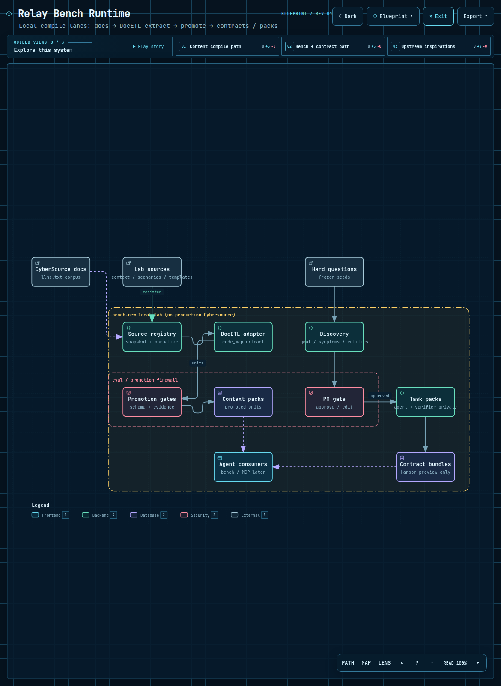

One tangible win: name which Relay Bench lane made an artifact — and what “honest” means for DocETL.

When someone (or an agent) claims “we integrated DocETL,” you should be able to ask: which lane, and what did the honest label say?
Local docs → registry → extract (heuristic or real DocETL code_map) →
schema/evidence gates → context packs.
Look under artifacts/content_engine/
Hard-question seeds → discovery → PM approve/edit → task packs → contract bundles (Harbor shape is preview-only).
Look under artifacts/task_packs/ and artifacts/contracts/
docetl package not importedFrame.code_map (no LLM)Upstream DocETL concepts: ucbepic.github.io/docetl · Lab product promise: Integration Success OS spec
Tap the best answer. Feedback is immediate.
1. A file lands at artifacts/content_engine/context_packs/…. Which lane?
2. Run log says docetl: imported-code_map. What happened?
3. Contract bundle marks Harbor preview_only: true. Safe claim?
Skim the DocETL overview so “map / code_map” isn’t a magic word: https://ucbepic.github.io/docetl/